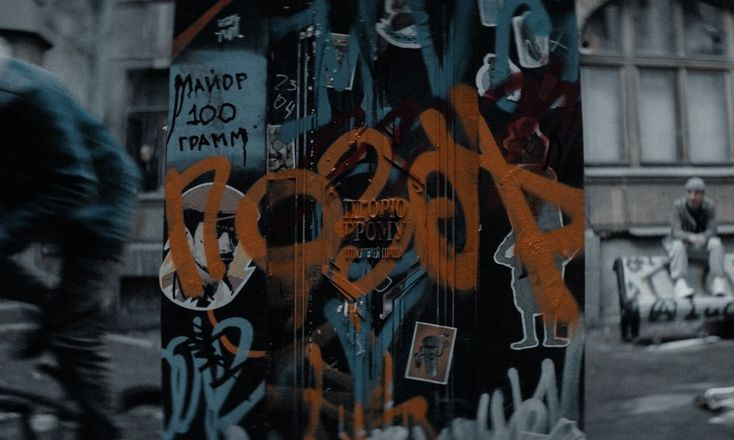
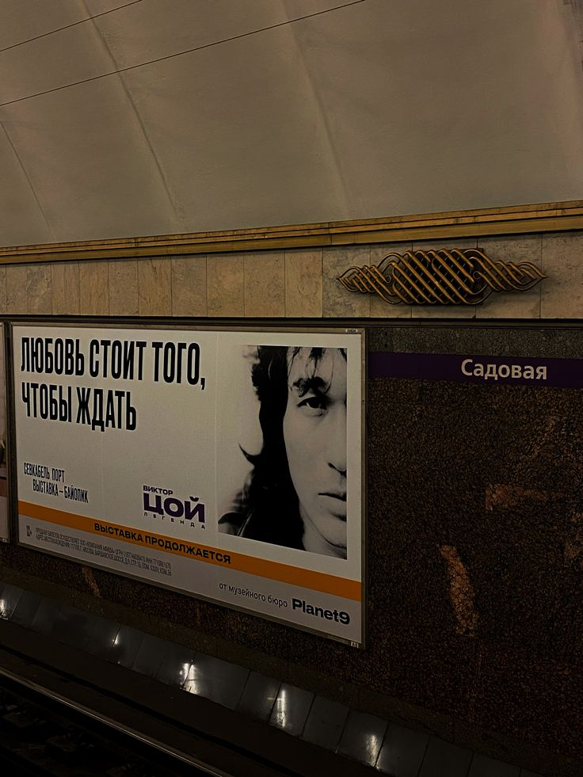
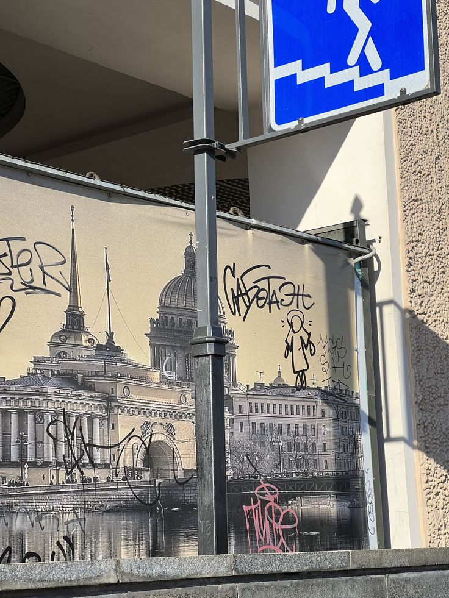

У каждого места
есть контекст
Исследуй Санкт-Петербург через тематические маршруты, необычные места и городские истории.
Выбрать маршрут →Маршруты
Выбирай прогулку по интересам и открывай город с новой стороны.


Майор Гром: Чумной Доктор
Пройди по местам, которые стали частью кинематографической истории Петербурга.
Петербург в кадре
Короткая прогулка по кинолокациям фильма.
Нажми на маркер, чтобы узнать больше о месте.
Сохранённые маршруты
Здесь собраны прогулки, которые ты добавил в избранное.
О проекте

КОНТЕКСТ — это про Петербург, который хочется исследовать
Мы собрали тематические маршруты, необычные места и идеи прогулок, чтобы ты мог увидеть город по-новому.
Выбирай интересные направления, открывай новые локации и создавай собственную историю знакомства с Санкт-Петербургом.
Как работает проект?
Выбираешь маршрут по теме и длительности. Найди прогулку, которая тебе интересна.
Открываешь карту — видишь все точки и порядок прохождения маршрута.
Идёшь по точкам. У каждой есть описание, фотографии и навигация.
Сохраняешь маршрут в избранное или предлагаешь друзьям отправиться вместе.
Предложить место
Знаешь интересную локацию? Расскажи о ней!